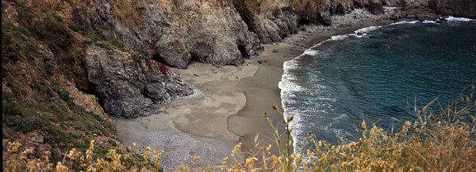
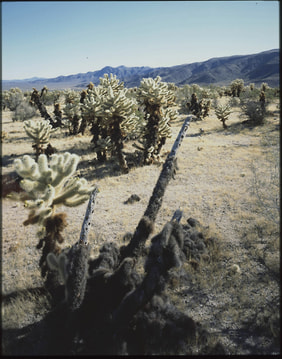

I grow thin films one atomic layer at a time and build the models that explain how they behave. PhD candidate in Chemical Engineering at Yale.
≈ 1,400 ALD cyclesat 0.05 nm per cycle
The color of a silicon wafer under a transparent film, computed from thin-film interference for thicknesses from 0 to 300 nm. Cleanrooms keep a chart like this on the wall for reading oxide thickness by eye. TiO2 and Al2O3 are films I grow by atomic layer deposition; SiO2 is the thermal oxide the wall charts were made for. The plot shows how much light the wafer reflects at each wavelength, and the color is what the dips leave behind. Drag along the strip, or use the arrow keys, to pick a thickness; the address bar keeps it, so a copied link opens on the same color.
I am a PhD candidate in Chemical Engineering at Yale University, in Shu Hu’s Photocatalysis and Reaction Engineering Lab, which I joined in 2021. My work sits between semiconductor processing and electrochemistry. I develop protective and passivating coatings for III–V semiconductors such as InP and GaInP, do the nanofabrication that turns them into devices, and write the transport models that connect a recipe to a result.
Before Yale I studied chemical engineering at the Cooper Union and at Columbia University, where my research followed ion transport in membrane-coated electrocatalysts.
† equal contribution * corresponding author
Burgundy first, then Napa, with detours through Bordeaux. I organize blind tastings with friends, everyone bringing a bottle, and keep my tasting notes, 175 so far, on CellarTracker. Sake when I can find good sake, and beer, which I check in on Untappd.
Winter weekends go to skiing. I track every day on the mountain with Slopes, where you can add me as a friend.
A few days from that log. My biggest day is still Copper Mountain in late November 2019: 18 runs and 27,306 vertical feet. At Breckenridge in 2022 I got above 12,800 feet, and at Jackson Hole on the second day of 2023 the Aerial Tram took me 4,107 feet up in one ride. Big Sky has the other two: my top speed, 53.1 mph, in 2025, and the Big Couloir off Lone Peak in February 2026.
滚落线Fall Line Slope angle, 20° to 50°+ A 3D ski map I built after FATMAP went dark. It shades every slope by its angle and the way it faces, computed in your browser from open elevation data, draws runs and lifts for ski areas around the world, replays GPX tracks and keeps working offline on the mountain. In Chinese and English. Open the map 两清All Square Who owes whom A bill splitter I built for group trips. Log the house, the lift tickets and the gas with who paid and who shares each, and it works out the fewest transfers that settle everyone up. Share the ledger as a link and the whole group keeps one copy up to date. In Chinese and English. Split a tripRock climbing, mostly at the Gunks in New York.
Mostly film. 35 mm on a Leica M3 and a Nikon 35Ti, panoramas on a Fuji TX-1; 6×6 on a Rolleiflex 2.8F; 4×5 on a large-format camera that also takes an Instax Wide back. Provia and Portra, and Kodak 5294 in 35 mm. I develop the film myself, scan it on an Epson V800, and print in the darkroom under an enlarger. Astrophotography when the sky cooperates.
显影Developed
